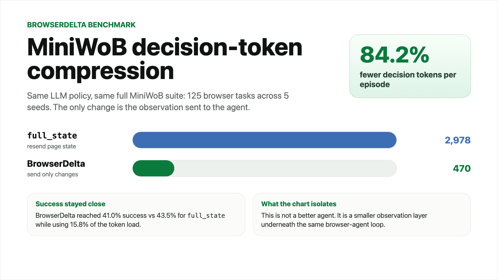

BrowserDelta compresses browser-agent context without swapping the agent.
On MiniWoB, we ran compact observations against a full-state baseline using the same LLM policy. BrowserDelta cut decision tokens by 84.2% while staying close on task success, showing the compression layer can be evaluated independently from agent quality.

What changed
full_state resends a large page observation every step. BrowserDelta sends a compact diff: what changed, which controls matter, and a crop only when pixels matter.
Why it matters
The benchmark isolates the observation layer: same task suite, same policy, smaller context. That makes BrowserDelta useful underneath Browserbase, Playwright, or any browser-use agent loop.